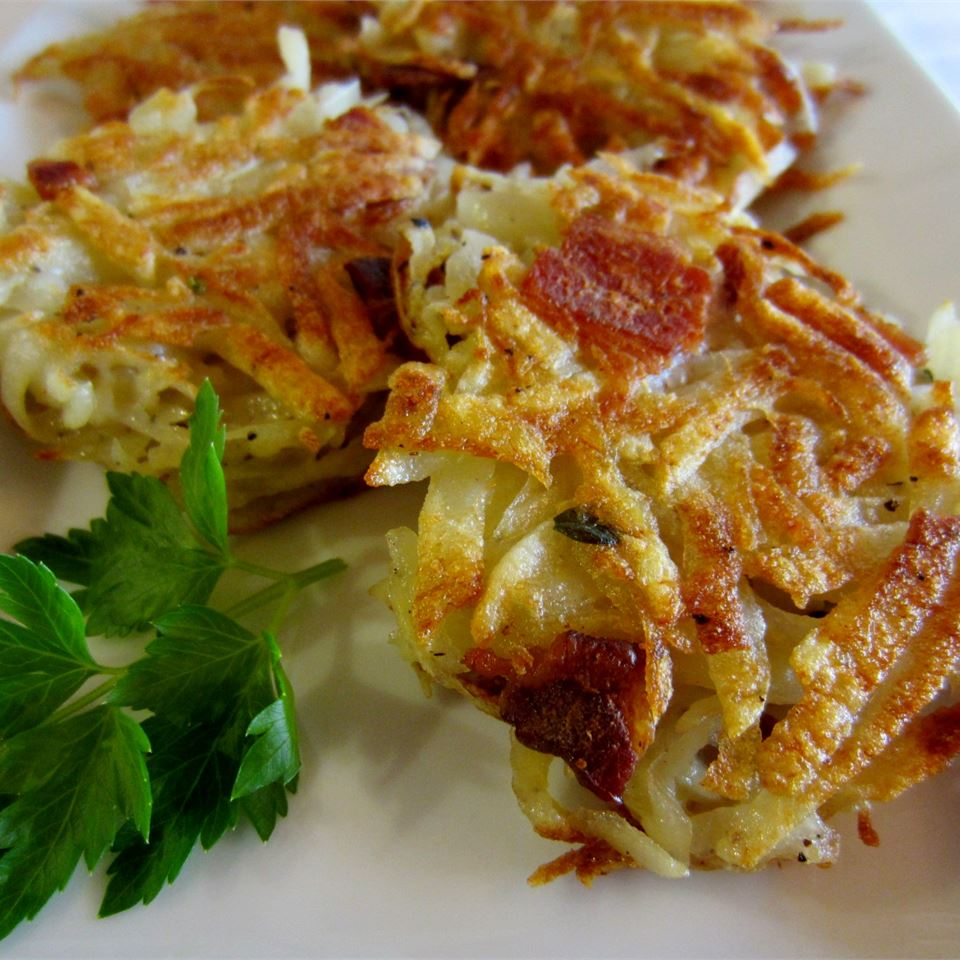

Bacon and Potato Pancakes

Description
Radada
Ingredients
- 4 slices bacon
- 4 Idaho potatoes, peeled and shredded
- 1/4 cup all-purpose flour
- 2 eggs
- 4 garlic cloves, minced
- 1 tablespoon chopped fresh thyme
- Salt and ground pepper to taste
- Vegetable oil for frying, or as needed
Steps
- Cook bacon in a skillet over medium heat until crisp, 3 to 5 minutes. Transfer to a paper towel-lined plate to drain; let cool and crumble. Reserve bacon drippings in skillet.
- Combine crumbled bacon, potatoes, flour, eggs, garlic, thyme, salt, and black pepper in a large bowl.
- Pour vegetable oil about 1/4-inch deep into skillet with bacon drippings and place over medium heat; heat until the oil and bacon drippings shimmer.
- Gently drop potato mixture by heaping tablespoon into hot oil and flatten potatoes into small patties about 3 inches in diameter. Cook until browned, about 3 minutes on each side.